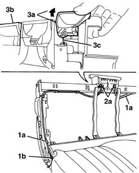
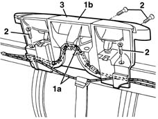

7050A63 Rear seat/ backrest. - movement control LEVERS R.R.
- Path
- Procedures > 70 FITTINGS > 7050 REAR SEATS > 7050A rear seat assembly > 7050A63 Rear seat/ backrest. - movement control LEVERS R.R.
- Kind
- repair procedure (removal / refitting; the operation number is the code)
- Applies to
- all engines; all production periods
- Interactive page
- https://sloeber94.github.io/elrnDB-lYpsln/en/#/2429651
Applies to: all engines; all production periods
 Removing
Removing
 Refitting
Refitting7050A14 split rear seat assembly - r+r (alternatively)
7050A87 JOINT COVER GUARD for (one), left or right individual seat - R.R. with seat removed (right and left)
1. Release the flexible cables (1a) from the side retainers (1b) on both sides of the seat.
2. Release the retainers (2a) for the flexible cable outer casing.
3. Lift up the control levers (3a) and (3b) and disconnect the flexible cables (3c) from the retainers on the levers.

Applies to: all engines; all production periods
1. Disconnect the seat sliding flexible control cable (1a) from the retainers for the lever assembly (1b).
2. Undo the bolts.
3. Remove the lever assembly.

Applies to: all engines; all production periods
Refitting
RemovingCheck that the lever assembly is not damaged.
Position the lever assembly and secure it using the bolts.
Connect the seat sliding flexible control cable to the lever assembly retainers.
Position the lever assembly connecting the flexible cables to the retainers.
Attach the outer casing retainers.
7050A87 JOINT COVER GUARD for (one), left or right individual seat - R.R. with seat removed (right and left)
7050A14 split rear seat assembly - r+r (alternatively)
Topics linked from this page (3)
- 7050A10 rear seat - r+r
- 7050A14 split rear seat assembly - r+r
- 7050A87 JOINT COVER GUARD for (one), left or right individual seat - R.R. with seat removed